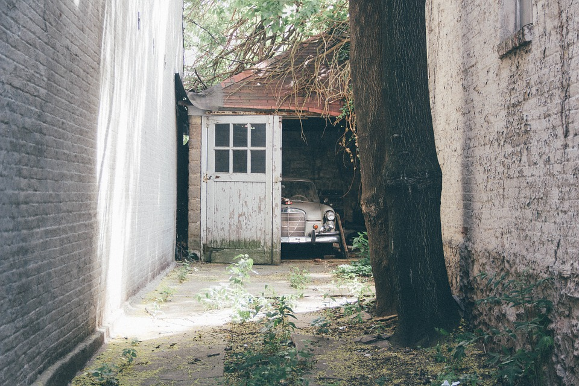
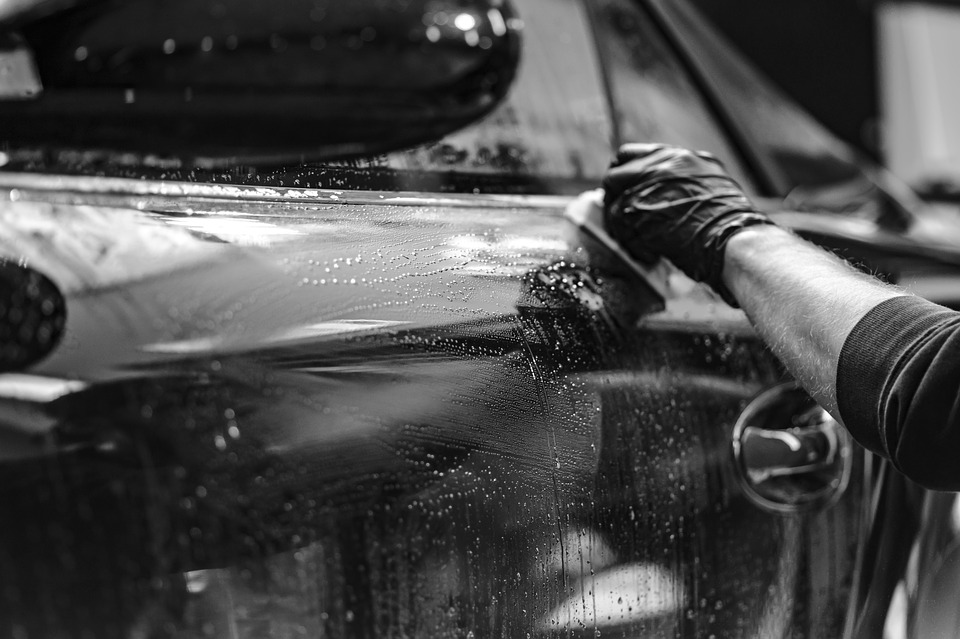
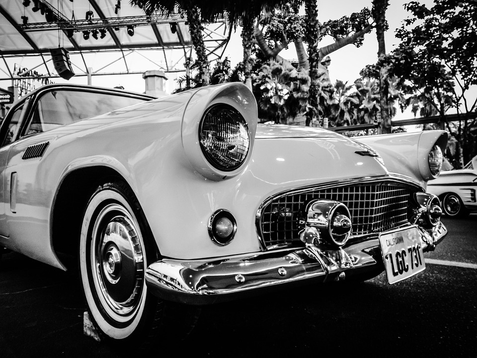
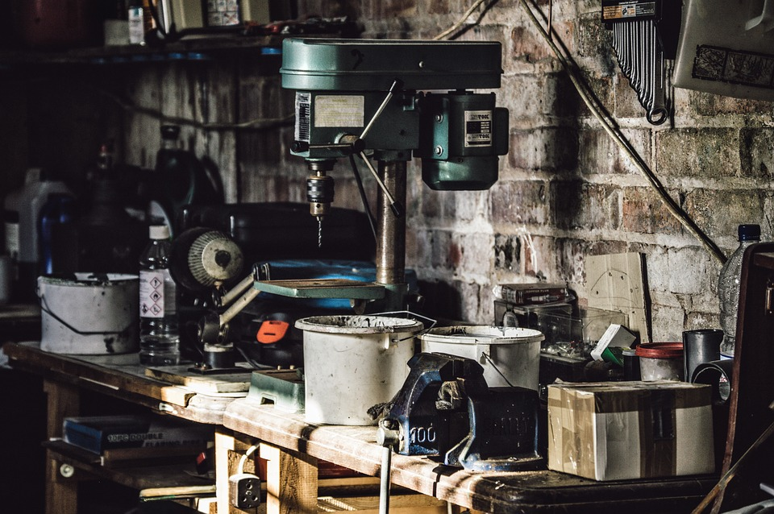
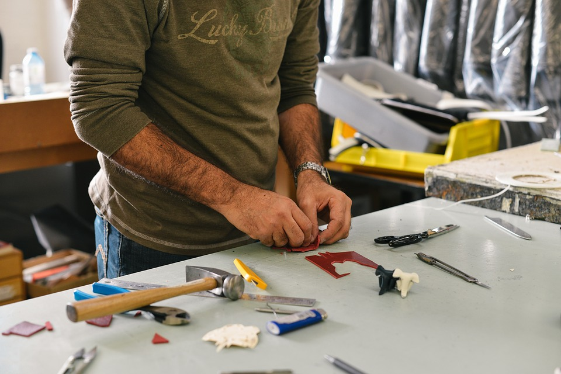
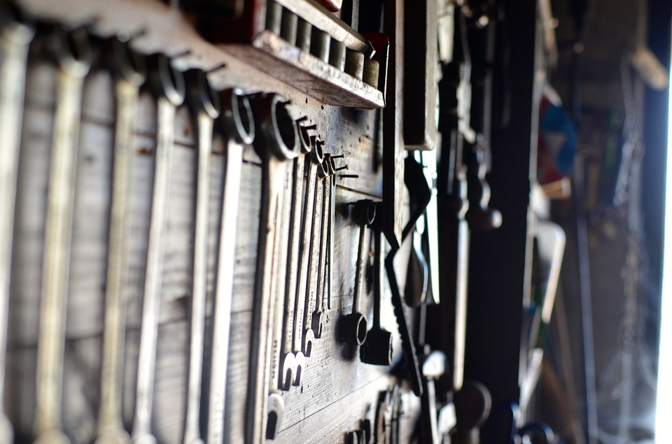
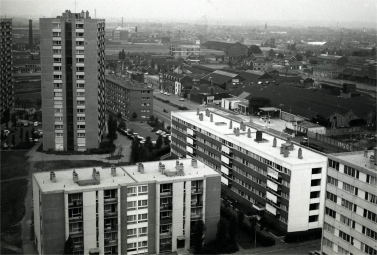

Les extérieurs

Sed ut tum ad senem senex de senectute, sic hoc libro ad amicum amicissimus scripsi de amicitia. Tum est Cato locutus, quo erat nemo fere senior temporibus illis, nemo prudentior; nunc Laelius et sapiens (sic enim est habitus) et amicitiae gloria excellens de amicitia loquetur. Tu velim a me animum parumper avertas, Laelium loqui ipsum putes. C. Fannius et Q. Mucius ad socerum veniunt post mortem Africani; ab his sermo oritur, respondet Laelius, cuius tota disputatio est de amicitia, quam legens te ipse cognosces.
Iamque lituis cladium concrepantibus internarum non celate ut antea turbidum saeviebat ingenium a veri consideratione detortum et nullo inpositorum vel conpositorum fidem sollemniter inquirente nec discernente a societate noxiorum insontes velut exturbatum e iudiciis fas omne discessit, et causarum legitima silente defensione carnifex rapinarum sequester et obductio capitum et bonorum ubique multatio versabatur per orientales provincias, quas recensere puto nunc oportunum absque Mesopotamia digesta, cum bella Parthica dicerentur, et Aegypto, quam necessario aliud reieci ad tempus.


Hac ita persuasione reducti intra moenia bellatores obseratis undique portarum aditibus, propugnaculis insistebant et pinnis, congesta undique saxa telaque habentes in promptu, ut si quis se proripuisset interius, multitudine missilium sterneretur et lapidum.
Le Showroom

Ibi victu recreati et quiete, postquam abierat timor, vicos opulentos adorti equestrium adventu cohortium, quae casu propinquabant, nec resistere planitie porrecta conati digressi sunt retroque concedentes omne iuventutis robur relictum in sedibus acciverunt.
Haec dum oriens diu perferret, caeli reserato tepore Constantius consulatu suo septies et Caesaris ter egressus Arelate Valentiam petit, in Gundomadum et Vadomarium fratres Alamannorum reges arma moturus, quorum crebris excursibus vastabantur confines limitibus terrae Gallorum.
Le Plateau Haut

Haec dum oriens diu perferret, caeli reserato tepore Constantius consulatu suo septies et Caesaris ter egressus Arelate Valentiam petit, in Gundomadum et Vadomarium fratres Alamannorum reges arma moturus, quorum crebris excursibus vastabantur confines limitibus terrae Gallorum.
Le Plateau Bas

Dum haec in oriente aguntur, Arelate hiemem agens Constantius post theatralis ludos atque circenses ambitioso editos apparatu diem sextum idus Octobres, qui imperii eius annum tricensimum terminabat, insolentiae pondera gravius librans, siquid dubium deferebatur aut falsum, pro liquido accipiens et conperto, inter alia excarnificatum Gerontium Magnentianae comitem partis exulari maerore multavit.
Les Réserves

Quam ob rem circumspecta cautela observatum est deinceps et cum edita montium petere coeperint grassatores, loci iniquitati milites cedunt. ubi autem in planitie potuerint reperiri, quod contingit adsidue, nec exsertare lacertos nec crispare permissi tela, quae vehunt bina vel terna, pecudum ritu inertium trucidantur.
Les quartiers

Nam quibusdam, quos audio sapientes habitos in Graecia, placuisse opinor mirabilia quaedam (sed nihil est quod illi non persequantur argutiis): partim fugiendas esse nimias amicitias, ne necesse sit unum sollicitum esse pro pluribus; satis superque esse sibi suarum cuique rerum, alienis nimis implicari molestum esse; commodissimum esse quam laxissimas habenas habere amicitiae, quas vel adducas, cum velis, vel remittas; caput enim esse ad beate vivendum securitatem, qua frui non possit animus, si tamquam parturiat unus pro pluribus.